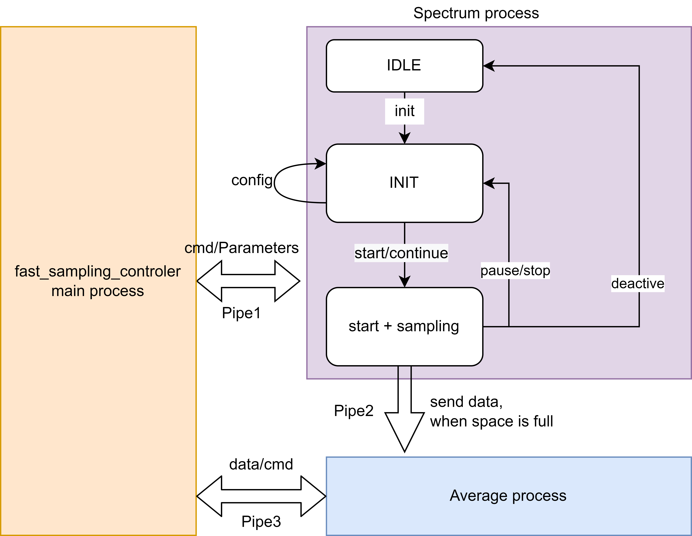

High-speed parallel data acquisition
You can find more details of this project in my github: qudi-dev
1. Logic - Pulsed Mode
1.1 relevant doc
Because our lab measures the voltage rather the number of Photons, we have to use analog channel rather counter channel to measure the input signal. So here we changed the original codes.
We build a new fast sampling class based on both Nidaq and another data acquisition card.
hardware: ni_x_series.ni_x_series_fast_sampling.py
hardware: spectrum.spectrum_fast_sampling.py
And then the current Configuration should be:1
2
3
4
5
6
7
8
9
10
11
12
13
14
15
16
17
18
19
20
21
22
23
24
25
26
27logic:
pulsed_master_logic:
module.Class: 'pulsed.pulsed_master_logic.PulsedMasterLogic'
connect:
pulsedmeasurementlogic: 'pulsed_measurement_logic'
sequencegeneratorlogic: 'sequence_generator_logic'
sequence_generator_logic:
module.Class: 'pulsed.sequence_generator_logic.SequenceGeneratorLogic'
#overhead_bytes: 0
#additional_predefined_methods_path: null
#additional_sampling_functions_path: null
#assets_storage_path:
connect:
pulsegenerator: 'pulseblaster'
pulsed_measurement_logic:
module.Class: 'pulsed.pulsed_measurement_logic.PulsedMeasurementLogic'
options:
raw_data_save_type: 'text'
#additional_extraction_path:
#additional_analysis_path:
connect:
fastcounter: 'ni_fast_sampling'
microwave: 'tabor_12G'
pulsegenerator: 'pulseblaster'
1.2 Spectrum DAQ
Some important parameters of spectrum:
- qwBufferSize should be multiple of lNotifySize;
- in multiple-fifo mode, lSegmentSize determined, how many segments we will get, because the number of segments = beacuse here we use int16 type, 1 data corresponds 2 bytes;
- lSegmentSize should be multiple of lNotifySize;
- lSegmentSize —> number of data in one segment;
- lNotifySize —> bytes of data in one notifycation.
- samplerate —> how many samples per second.
1.3 Construction of mode

The complete signal table is：
| signal | Description |
|---|---|
| controler_pipe1 | one side of pipe1, send cmd and paramaters to process of spectrum |
| spectrum_pipe1 | another side of pipe1, receive cmd and paramaters from main process, send some ready signal |
| state_1 | state bit of pipe1, 1 for RUN, 0 for STOP |
| average_pipe2 | one side of pipe2, use to receive data and cmd |
| spectrum_pipe2 | one side of pipe2, use to send data and cmd |
| controler_pipe3 | one side of pipe 3, use to send cmd and receive data |
| average_pipe3 | one side of pipe 3, use to receive cmd and send averaged data |
| state_3 | state bit of pipe3, 1 for RUN, 2 for get data, 0 for STOP, -1 for exit |
This mode works with 3 parallel processes:
- MAIN process: send control signal, let the FSM(Finite-state machine) in daq process reach the corresponding working state.
- DAQ process: contains a FSM, When in the SS state, data will be continuously collected until the predefined sampling limit is reached, and then the sampled data will be transferred to the next process.
- AVERAGE process: When receiving data from last process, store it in the buffer and average the data. This process will not stop until it gets a get_data command from main process.
Each of them use a unique cpu core to caculate, between them there’re 3 pipes with 2 global variable to connect different processes and send message. With Multiprocessing package it’s possible to do tasks described above, which makes it faster to work.
Both spectrum and Ni cards work in this construction.